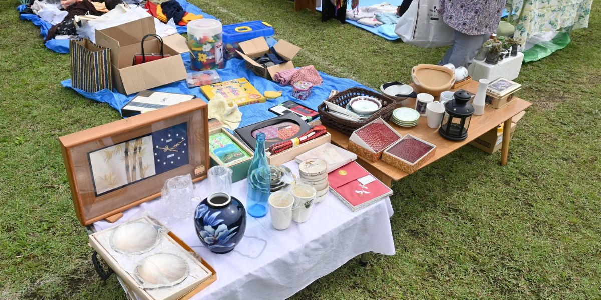
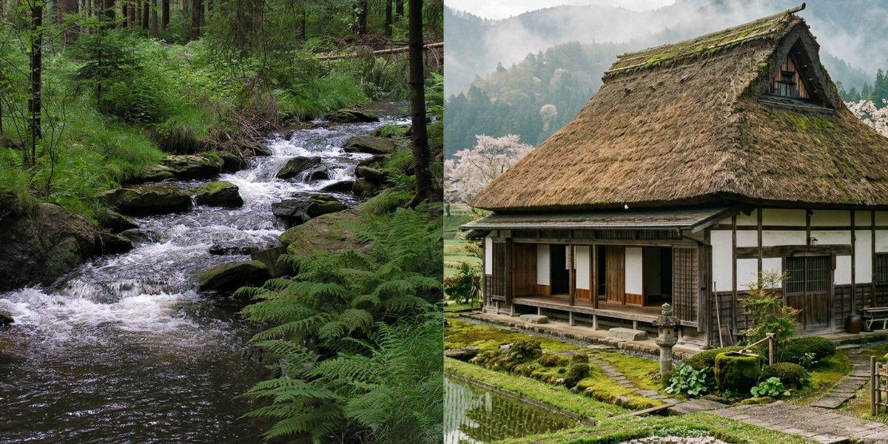
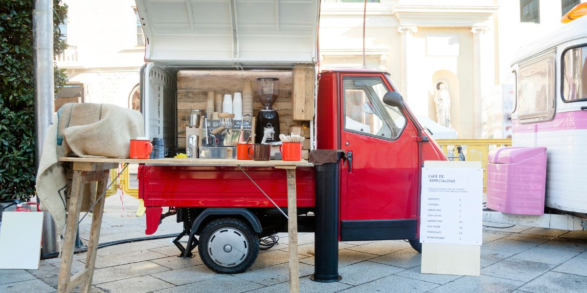
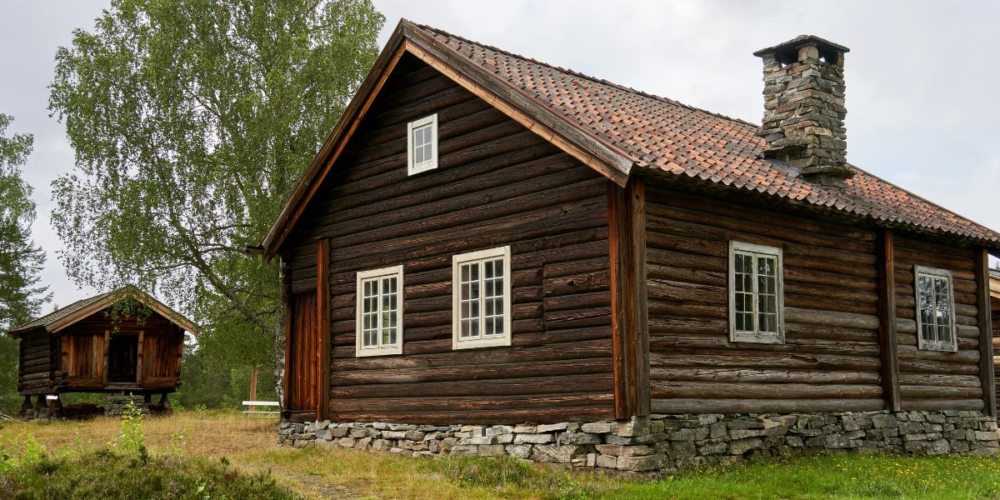

地域活性化支援、過疎化改善事業
REGIONAL REVITALIZATION
REGIONAL REVITALIZATION
人口減少や高齢化が進む地方において、地域が持つ本来の魅力と潜在力を引き出し、持続可能な活性化策を実行します。行政・民間・住民をつなぐ架け橋として、地域の課題解決に取り組みます。




歴史・文化・自然・人材など、地域に眠る資源を発掘・整理し、観光・産業・交流の軸として活用する戦略を策定します。「あるもの」を最大限に活かすことで、外部に頼らない自立した地域づくりを目指します。

移住者の呼び込みから定住支援まで、地域に人を呼び込み、根付かせるための仕組みづくりを支援します。空き家活用や就業支援と連携し、総合的な過疎化改善に取り組みます。

地域に点在する空き家をリノベーションし、移住希望者が地域での暮らしを体験できる短期滞在型の宿泊施設として整備します。実際に住む前に地域の雰囲気や生活環境を肌で感じていただくことで、移住後のミスマッチを防ぎ、定住率の向上につなげます。地元住民との交流の場としても機能する施設づくりを目指します。